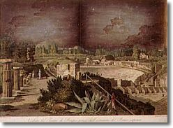
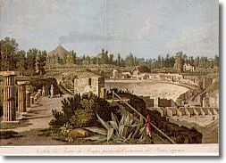

Cleaning
Removal of blackening from lead white pigment
A special
example of cleaning is the reversion of blackened lead white pigment.
This pigment becomes black
when it reacts with an air pollutant, hydrogen sulphide. The black colour
can be removed by oxidising it with a
solution of hydrogen peroxide in ether.


18th century hand-coloured
engraving by George Hackert showing blackened lead white pigment in
the sky area